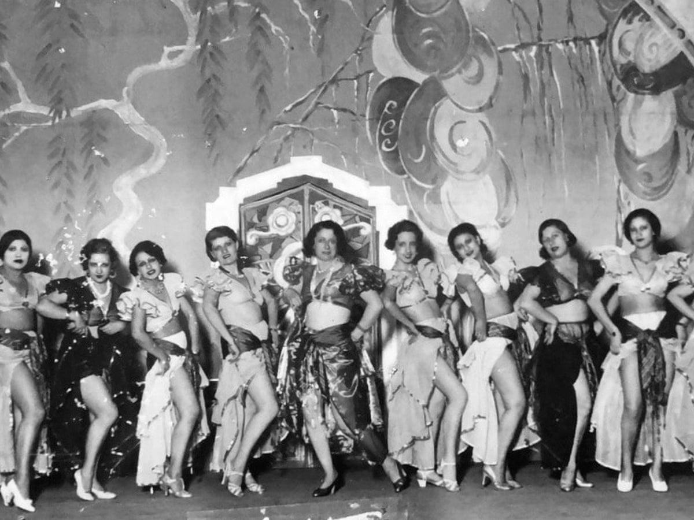
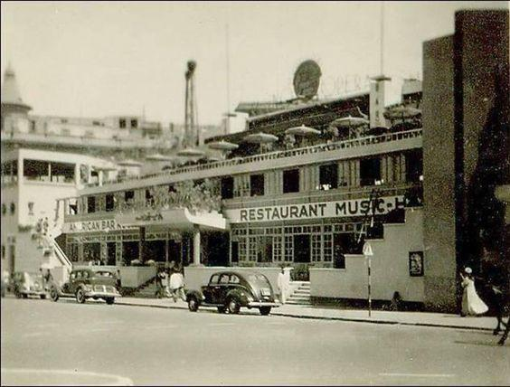
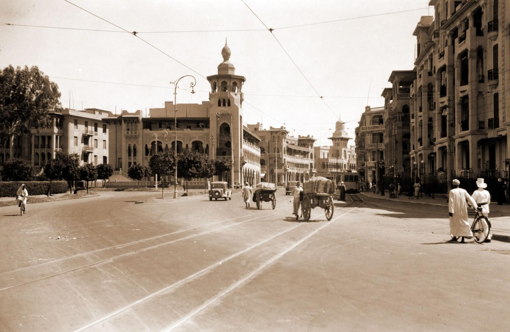
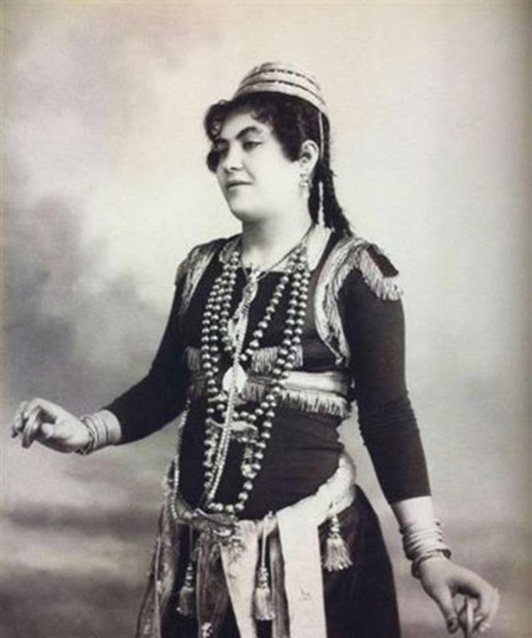
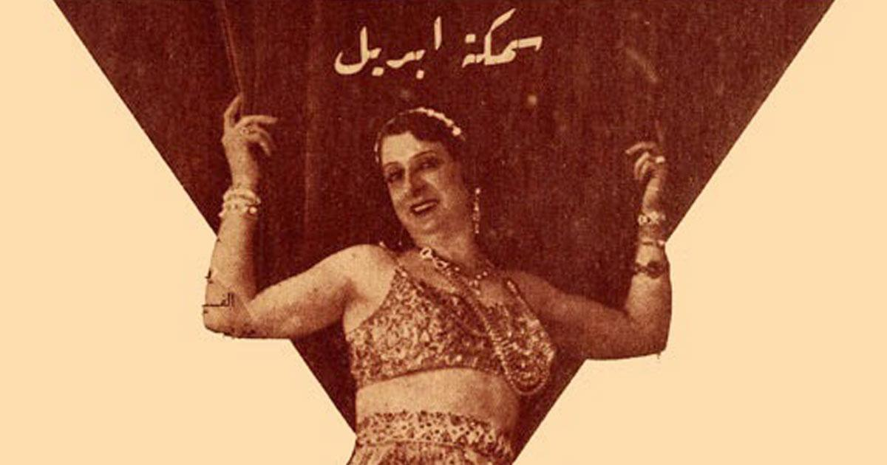
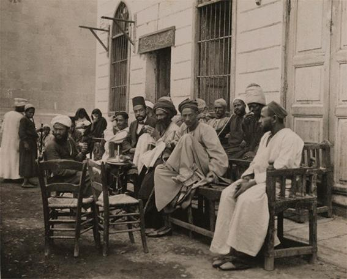

Cairo, 1920s — the night takes the stage
Yes—Cairo is exactly the right choice.
If Shanghai is layered modernity and Berlin is exposed modernity, then Cairo in the 1920s is something else:
Performance becoming national identity
Where you are
You’re near the Ezbekiyya district—the entertainment center of the city. The street is active even late:
Carriages and early motorcars side by side
Electric lights mixed with older, dimmer sources
Music drifting out of multiple venues at once
You enter a cabaret associated with figures like Badia Masabni—not just a performer, but an architect of modern Middle Eastern nightlife.
The room
It’s more open than Berlin, more formal than Buenos Aires.
Tables arranged with intention
A clear stage—not improvised space
Musicians visible, part of the spectacle
This is not a cramped origin story. This is already a system of performance.
The sound
The music doesn’t hit like jazz. It unfolds.
Strings (oud, violin) carrying long melodic lines
Rhythms that cycle rather than drive forward
Ornamentation—notes bending, extending, lingering
You don’t anticipate the next phrase—you follow it as it develops.
The dancer
Then the focus shifts.
The dancer enters—not rushed, not explosive.
Controlled.
This is where what the West will later call “belly dance” is being reshaped into stage form. The body isolates movement:
Hips articulate rhythm
Torso moves independently
Arms frame, rather than lead
It’s not about speed. It’s about precision and control within fluidity.
The audience
Mixed, but structured:
Egyptian elites
Foreign visitors
Artists, musicians, intermediaries
Unlike Harlem:
The audience is not segregated in the same rigid wayBut like Shanghai:
Different worlds are sharing the same room without fully merging
The underlying shift
What you’re seeing is transformation.
Dance that existed in:
Weddings
Private celebrations
Folk contexts
…is being:
Formalized
Staged
Exported
Badia Masabni’s innovation was to turn local forms into theatrical performance—adding:
Costuming designed for stage lighting
Choreography adapted for audiences
Structured programs
The sensual experience
It’s not chaotic. It’s composed.
Warm air, slower pacing
Music that pulls attention inward rather than outward
Movement that invites focus, not frenzy
If Berlin is sharp and Harlem is kinetic, Cairo is:
Controlled intensity
What lingers
You don’t leave with a single melody stuck in your head.
You leave with a feeling of continuity—as if the performance could have kept going indefinitely, evolving rather than ending.